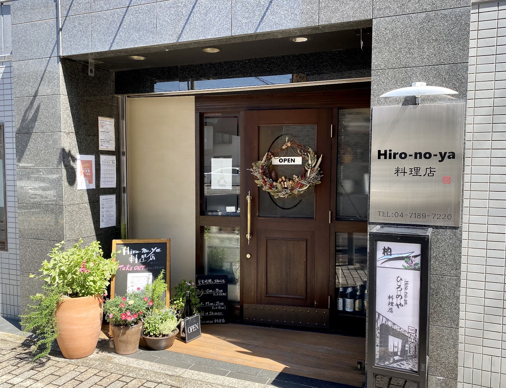

Location
立地・空間
Hiro-no-ya 料理店は、柏市役所へ向かう途中、駅から少し離れた場所にございます。こじんまりとした店内には、カウンター席とテーブル席をご用意しており、落ち着いた雰囲気の中でお食事をお楽しみいただけます。

写真: a k（Google マップ）
Hospitality
接客・ホスピタリティ
ご注文の際には苦手な食材を確認するなど、お一人おひとりに合わせたご案内を心がけています。フォークやナイフだけでなくお箸もご用意しており、写真撮影のお声がけにも快く応じています。
カウンター席には男性のお一人様常連の方、テーブル席には女性お一人様やグループのお客様など、さまざまなお客様が自然に混ざり合いながら、それぞれのペースでお食事を楽しんでいらっしゃいます。
Cuisine
料理への向き合い方
季節の野菜を活かしたコースで、旬を感じる一皿づくりを大切にしています。自家製パンや自家製デザートにもこだわり、食事の最後までお楽しみいただけるよう努めています。
お食事に合わせて、ワイン・日本酒・焼酎などの一杯を店主がご提案いたします。料理とお酒、両方の時間をゆっくりとお楽しみください。
Scenes
こんなシーンに
- 女子会に落ち着いた雰囲気の中、気取らずに会話を楽しめます
- 記念日・ご褒美ディナーに季節を感じるコースで特別なひとときを
- お一人ランチにカウンター席があるので、女性のお一人様も入りやすい空間です
- 通いたくなるお店として季節ごとに表情を変えるコースを、また味わいに